Ce projet présente la conception et la configuration complète d'une infrastructure
réseau d'entreprise sur Cisco Packet Tracer, couvrant l'ensemble des couches 2 et 3 du
modèle OSI : segmentation VLAN, redondance L2/L3, routage dynamique OSPF,
sécurité ACL et accès Internet via NAT.
Sommaire
I. Objectifs du lab
II. Tableau des technologies abordées
III. Schéma de la topologie
IV. Tableau des équipements et des VLANs
1. Ports trunk
2. EtherChannel
3. VTP + VLANs
4. Ports access + Port Security
5. Spanning Tree
1. ip routing + SVIs
2. Hot Standby Router Protocol
3. Routed ports
4. Adressage IP routeurs
5. Open Shortest Path First
6. Routes statiques + flottantes
7. Network Address Translation (PAT)
8. Access Control List
9. DHCP + ip helper
1. Tests couche 2
2. Tests Couche 3
VIII. Conclusion
I. Objectifs du lab
Ce lab a pour objectif de démontrer la maîtrise des fondamentaux réseau en configurant
une infrastructure complète de A à Z sur Cisco Packet Tracer. Il couvre les deux grandes
couches du modèle OSI utilisées en entreprise : la couche 2 (switching) et la couche 3
(routing).
L'infrastructure est composée de switches de distribution Layer 3 (CD1 et CD2), de
switches access (Acc3 et Acc4), de routeurs edge et de routeurs ISP, reproduisant une
architecture réseau d'entreprise réaliste avec redondance, sécurité et segmentation.
II. Tableau des technologies abordées
Domaine
Technologie
Objectif
Couche 2
VLANs + VTP
Segmentation du réseau
Couche 2
Ports trunk
Transport multi-VLAN
Couche 2
EtherChannel LACP
Agrégation de liens + redondance
Couche 2
Spanning Tree PVST+
Prévention des boucles L2
Couche 2
Port Security
Sécurité des ports access
Couche 3
SVIs + ip routing
Routage inter-VLAN
Couche 3
HSRP
Redondance passerelle L3
Couche 3
OSPF
Routage dynamique
Couche 3
Routes statiques + flottantes
Routage manuel + backup
Couche 3
NAT PAT
Accès Internet
Couche 3
ACL
Filtrage et sécurité
Couche 3
DHCP + ip helper
Attribution automatique d'IP
Sécurité
DMZ VLAN 200
Isolation serveur WEB
Haute dispo
Redondance L2/L3
Continuité de service
III. Schéma de la topologie
Le schéma ci-dessous représente l'architecture globale du réseau déployé sur Cisco Packet Tracer.
Cliquez sur l'image pour l'agrandir.
VLAN natif trunk + management des switches, remplace le VLAN 1 par défaut
V. Configuration Couche 2
Cette section détaille la configuration de la couche switching de l'infrastructure.
Les mécanismes mis en place (trunks 802.1Q, EtherChannel, VTP, Spanning Tree et Port Security),
constituent le socle L2 sur lequel repose l'ensemble du réseau.
1. Ports trunk
Dans ce lab, les trunks sont indispensables car ils permettent aux VLANs créés sur CD1
d'être accessibles sur CD2, Acc3 et Acc4, et de remonter jusqu'aux routeurs R1 et R2
pour le routage inter-VLAN. Chaque lien entre switch sont configuré en mode trunk.
Un VLAN natif (VLAN 99) est défini sur chaque trunk. C'est le VLAN qui circule sans tag
sur le lien. J'utilise un VLAN dédié (99) plutôt que le VLAN 1 par défaut pour des raisons
de sécurité.
Le lien entre CD1 et CD2 est le lien le plus critique du lab — tout le trafic inter-VLAN
entre les deux switches de distribution passe par là. Il est donc logique de le rendre
redondant et plus performant avec un EtherChannel plutôt qu'un simple lien trunk.
Le choix de LACP plutôt que PAgP est une bonne pratique car LACP est
compatible avec tous les constructeurs, pas uniquement Cisco.
Zoom
EtherChannel LACP entre CD1 et CD2 (G1/0/2 + G1/0/3)
A. Tableau EtherChannel (Port-Channel)
DE
PORT
VERS
PORT
PROTOCOLE
MODE
CD1
G1/0/2 + G1/0/3
CD2
G1/0/2 + G1/0/3
LACP
Active / Active
B. Vérification des configuration EtherChannel LACP
Les interfaces Gi1/0/2 et Gi1/0/3 sont agrégées dans le Port-Channel et toutes les deux actives (P) dans le bundle.
Le statut SU indique que le Port-Channel fonctionne correctement en couche 2 (S) et est en utilisation (U).
Cette configuration permet d'augmenter la bande passante entre les switches tout en assurant la redondance en cas de panne d'un lien physique.
3. VTP + VLANs
Dans ce lab, CD1 est configuré en tant que serveur VTP. Il centralise et gère la base de
données des VLANs du réseau. Les switches CD2, Acc3 et Acc4 sont configurés en clients VTP
et récupèrent automatiquement les VLANs via les liens trunk, ce qui facilite l'administration
et évite de devoir créer manuellement les VLANs sur chaque switch.
Plusieurs VLANs ont été créés afin de segmenter le réseau en différents départements.
Cette segmentation améliore l'organisation du réseau, réduit les domaines de broadcast
et renforce la sécurité en isolant notamment les serveurs et certains équipements sensibles
du reste des utilisateurs.
A. Tableaux des VLANs
VLAN ID
NOM
RÉSEAU
PASSERELLE (HSRP VIP)
DHCP
ÉQUIPEMENTS
VLAN 10
COMPTA
10.10.10.0/24
10.10.10.1
Pool DHCP R1/R2
PC COMPTA
VLAN 20
RH
10.10.20.0/24
10.10.20.1
Pool DHCP R1/R2
PC RH
VLAN 30
ADMIN
10.10.30.0/24
10.10.30.1
IP statique
PC ADMIN
VLAN 100
SERVEURS
10.10.100.0/24
10.10.100.1
IP statique
SRV-DHCP, SRV-DNS
VLAN 200
DMZ
10.10.200.0/24
10.10.200.1
IP statique
SRV-WEB, SRV-MAIL, SRV-FTP
VLAN 99
NATIVE / MGMT
10.10.99.0/24
—
IP statique
Interfaces management switches
B. Vérification des configuration VLAN
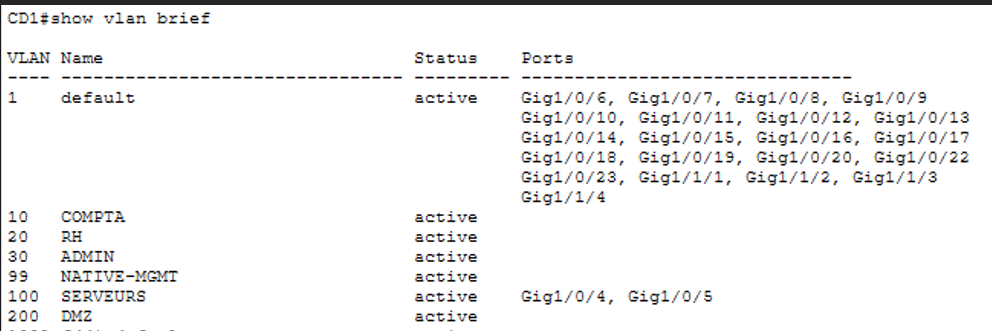
Tous les VLANs créés sur CD1 apparaissent automatiquement sur CD2, Acc3 et Acc4 grâce à la propagation VTP via les trunks.
4. Ports access + Port Security
Les ports des switches Acc3 et Acc4 connectés aux PC ont été configurés en mode access
et assignés à leur VLAN respectif. Les ports des switches CD1 et CD2 connectés aux serveurs
ont également été configurés en access sur les VLANs 100 et 200.
Le Port Security a été activé sur chaque port access pour limiter à 1 seule adresse MAC
par port. En cas de violation, le port se met en shutdown pour les PC et en
restrict pour les serveurs. Le mode sticky permet d'apprendre
automatiquement la MAC de l'équipement connecté et de la mémoriser donc pas besoin de la saisir manuellement.
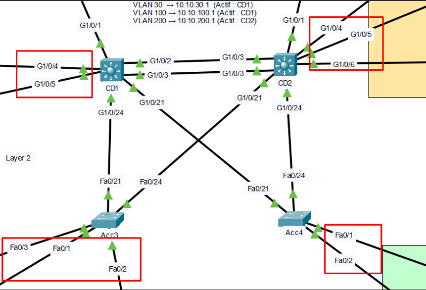
Zoom
Ports access sur Acc3, Acc4, CD1 et CD2
A. Tableau des port access
Switch
Port
VLAN
Équipement
Port Security
Violation
Acc3
Fa0/1
10
PC COMPTA
Max 1 MAC
Shutdown
Acc3
Fa0/2
30
PC ADMIN
Max 1 MAC
Shutdown
Acc3
Fa0/3
10
PRINTER COMPTA
Max 1 MAC
Shutdown
Acc4
Fa0/1
20
PC RH
Max 1 MAC
Shutdown
Acc4
Fa0/2
20
PC RH 02
Max 1 MAC
Shutdown
CD1
G1/0/4
100
SRV-DHCP
Max 1 MAC
Restrict
CD1
G1/0/5
100
SRV-DNS
Max 1 MAC
Restrict
CD2
G1/0/4
200
SRV-WEB
Max 1 MAC
Restrict
CD2
G1/0/5
200
SRV-MAIL
Max 1 MAC
Restrict
CD2
G1/0/6
200
SRV-FTP
Max 1 MAC
Restrict
B. Vérification des configuration ports security
Acc3
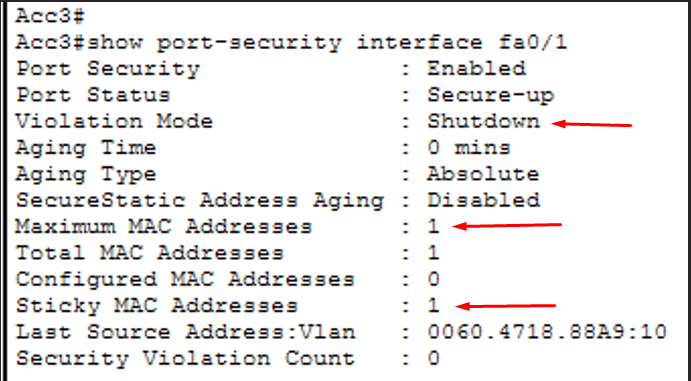
Port Security activé sur Fa0/1 — max 1 adresse MAC. Mode violation : Shutdown.
Une adresse MAC a été apprise via le mode sticky — le port se désactive automatiquement si un équipement non autorisé est connecté.
CD2
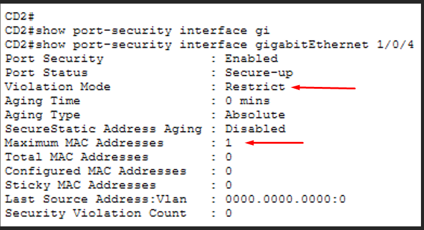
Mode violation : Restrict — les adresses MAC non autorisées sont bloquées sans désactiver le port.
Les services réseau restent disponibles tout en sécurisant les ports connectés aux serveurs.
5. Spanning Tree
Le Spanning Tree Protocol (STP) en mode PVST+ a été configuré pour éviter les boucles
réseau au niveau couche 2. Puisque chaque PC et serveur est connecté à la fois à CD1
et CD2 via Acc3/Acc4, il existe plusieurs chemins possibles donc sans STP, cela créerait
des boucles infinies et paralyserait le réseau.
Pour optimiser le trafic, les rôles de root bridge ont été répartis entre CD1 et CD2 en
fonction des VLANs, en cohérence avec la configuration HSRP — CD1 est root sur les VLANs
où il est actif HSRP, CD2 pareil. Cela garantit que le trafic L2 et L3 prend toujours
le même chemin optimal.
PortFast et BPDU Guard ont été activés sur les ports access
vers les PC — PortFast permet au port de passer immédiatement en état forwarding sans attendre
la convergence STP, et BPDU Guard bloque le port si un switch y est connecté par erreur.
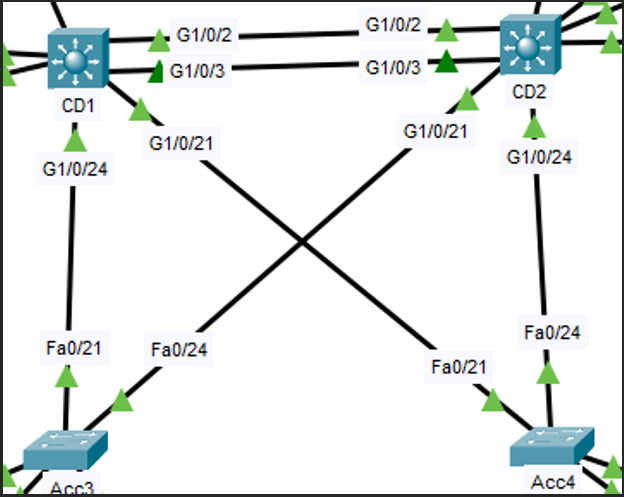
Zoom
Topologie STP PVST+ — CD1, CD2, Acc3, Acc4
A. Tableau Spanning Tree (PVST+)
VLAN
ROOT BRIDGE
ROOT SECONDAIRE
PORTFAST / BPDU GUARD
VLAN 10, 30, 100
CD1
CD2
Acc3 F0/1, Acc3 F0/2
VLAN 20, 200
CD2
CD1
Acc4 F0/1
B. Vérification des configuration Spanning Tree (PVST+)
CD1 pour le VLAN 10
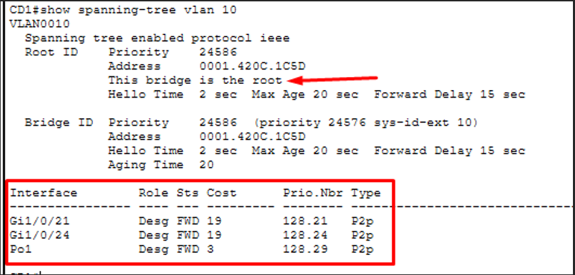
CD1 est le Root Bridge pour le VLAN 10.
Les interfaces Gi1/0/21, Gi1/0/24 et Po1 sont en état Designated Forwarding — aucun port bloqué car le Root Bridge possède uniquement des ports désignés.
CD2 pour le VLAN 20
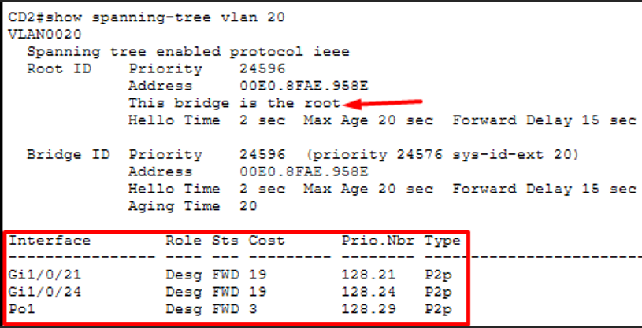
CD2 est le Root Bridge pour le VLAN 20.
Les interfaces Gi1/0/21, Gi1/0/24 et Po1 sont également en état Designated Forwarding.
Acc3 pour le VLAN 10
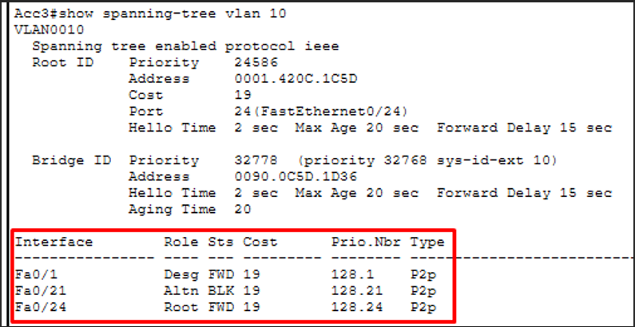
Chemin vers le Root Bridge (CD1) via Fa0/24 — état Root Forwarding (Root FWD).
Fa0/21 en état Alternate Blocking (Altn BLK) pour éviter une boucle L2.
Acc4 pour le VLAN 20
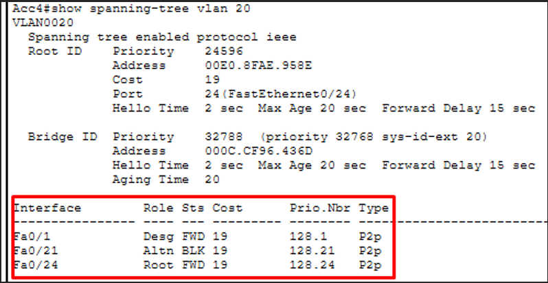
Chemin vers le Root Bridge (CD2) via Fa0/24 — état Root Forwarding (Root FWD).
Comme Acc3, Fa0/21 en état Alternate Blocking pour éviter une boucle L2.
VI. Configuration Couche 3
Cette section couvre la configuration du routage et des services réseau. Les switches de distribution CD1 et CD2 jouent ici un rôle central en assurant le routage inter-VLAN directement au niveau de la distribution, sans dépendre des routeurs edge. HSRP, OSPF, NAT et ACL viennent compléter l'architecture pour garantir la redondance, l'accès Internet et la sécurité du trafic.
1. ip routing + SVIs
La commande ip routing a été activée sur CD1 et CD2 pour transformer ces switches de distribution en équipements Layer 3 capables de router le trafic entre les VLANs. Une interface SVI (Switch Virtual Interface) a été créée pour chaque VLAN sur CD1 et CD2 — chaque SVI possède une adresse IP qui servira de passerelle pour les équipements de ce VLAN.
Ce choix est plus performant que le router-on-a-stick car le routage inter-VLAN se fait directement dans les switches sans remonter jusqu'aux routeurs R1/R2, qui eux ne gèrent que le trafic WAN.
Topologie — Routage inter-VLAN via SVIs sur CD1 et CD2
A. Tableau des SVIs
Interface SVI
VLAN
IP CD1
IP CD2
interface vlan 10
VLAN 10
10.10.10.2/24
10.10.10.3/24
interface vlan 20
VLAN 20
10.10.20.2/24
10.10.20.3/24
interface vlan 30
VLAN 30
10.10.30.2/24
10.10.30.3/24
interface vlan 99
VLAN 99
10.10.99.2/24
10.10.99.3/24
interface vlan 100
VLAN 100
10.10.100.2/24
10.10.100.3/24
interface vlan 200
VLAN 200
10.10.200.2/24
10.10.200.3/24
B. Vérification des SVIs
Sur CD1
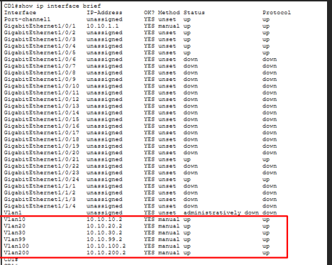
show ip interface brief — CD1
Les interfaces VLAN 10, 20, 30, 99, 100 et 200 sont toutes en état up/up, confirmant que les VLANs sont actifs et opérationnels.
CD1 peut ainsi assurer le routage inter-VLAN directement au niveau distribution.
Sur CD2
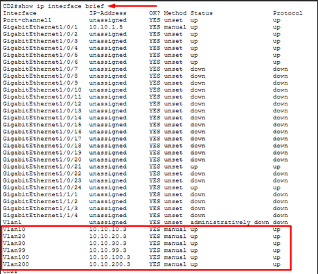
show ip interface brief — CD2
Les interfaces VLAN 10, 20, 30, 99, 100 et 200 sont toutes en état up/up, confirmant que les VLANs sont actifs et opérationnels.
CD2 peut ainsi assurer le routage entre les différents réseaux en cas de bascule HSRP.
2. Hot Standby Router Protocol
HSRP (Hot Standby Router Protocol) a été configuré sur les SVIs de CD1 et CD2 pour assurer la redondance de la passerelle par défaut. Chaque VLAN possède une adresse IP virtuelle (VIP) qui est la passerelle utilisée par les PC et serveurs. Si CD1 tombe, CD2 prend automatiquement le relais sans aucune interruption visible pour les utilisateurs.
Les rôles actif/standby ont été répartis entre CD1 et CD2 selon les VLANs, en parfaite cohérence avec le Spanning Tree — CD1 est actif HSRP sur les VLANs où il est root bridge STP, et CD2 pareil. Cette cohérence évite le trafic asymétrique et garantit le chemin le plus court à chaque instant.
Le preempt a été activé sur le switch actif — si CD1 tombe puis revient, il reprend automatiquement son rôle actif sans intervention manuelle.
Topologie — Redondance passerelle HSRP sur CD1 et CD2
A. Tableau HSRP
VLAN
VIP Passerelle
CD1 (IP / Priorité)
CD2 (IP / Priorité)
Switch Actif
VLAN 10
10.10.10.1
10.10.10.2 / 110
10.10.10.3 / 100
CD1
VLAN 20
10.10.20.1
10.10.20.2 / 100
10.10.20.3 / 110
CD2
VLAN 30
10.10.30.1
10.10.30.2 / 110
10.10.30.3 / 100
CD1
VLAN 100
10.10.100.1
10.10.100.2 / 110
10.10.100.3 / 100
CD1
VLAN 200
10.10.200.1
10.10.200.2 / 100
10.10.200.3 / 110
CD2
B. Vérification du routed ports
Sur CD1
ping 10.10.1.2 — CD1 vers R1
Le test ICMP effectué depuis CD1 vers l'adresse 10.10.1.2 confirme le bon fonctionnement du lien Layer 3 point à point entre CD1 et R1.
Les cinq paquets ont été transmis avec succès, validant la connectivité IP sur le réseau /30.
Sur CD2
ping 10.10.1.6 — CD2 vers R2
Le test ICMP effectué depuis CD2 vers l'adresse 10.10.1.6 confirme le bon fonctionnement du lien Layer 3 entre CD2 et R2.
Cette vérification valide la configuration des interfaces routées et la communication entre les équipements Layer 3 du réseau.
3. Routed ports
Les ports G1/0/1 de CD1 et CD2 ont été convertis en interfaces Layer 3 pures avec la commande no switchport. Ces ports ne sont plus des ports switching — ils deviennent des interfaces routées avec leur propre adresse IP, exactement comme un port de routeur.
Ce choix est plus propre et plus réaliste qu'un trunk avec un VLAN dédié. Le lien entre CD1↔R1 et CD2↔R2 est un lien point à point /30 — seules deux adresses IP sont nécessaires, pas besoin d'un VLAN supplémentaire.
Topologie — Routed ports G1/0/1 sur CD1 et CD2
A. Tableau des routed ports
De
Port
IP
Masque
Vers
Port
IP
CD1
G1/0/1
10.10.1.1
/30
R1
G0/1
10.10.1.2
CD2
G1/0/1
10.10.1.5
/30
R2
G0/1
10.10.1.6
B. Vérification du routed ports
Sur CD1
ping 10.10.1.2 — CD1 vers R1
Le test ICMP effectué depuis CD1 vers l'adresse 10.10.1.2 confirme le bon fonctionnement du lien Layer 3 point à point entre CD1 et R1.
Les cinq paquets ont été transmis avec succès, validant la connectivité IP sur le réseau /30.
Sur CD2
ping 10.10.1.6 — CD2 vers R2
Le test ICMP effectué depuis CD2 vers l'adresse 10.10.1.6 confirme le bon fonctionnement du lien Layer 3 entre CD2 et R2.
Cette vérification valide la configuration des interfaces routées et la communication entre les équipements Layer 3 du réseau.
4. Adressage IP routeurs
Toutes les interfaces des routeurs R1, R2, SP1 et SP2 ont été configurées avec leurs adresses IP. R1 et R2 ont trois interfaces chacun dont une vers l'ISP, une vers les switches de distribution et une pour le lien point à point entre eux (utilisé pour la redondance et les routes flottantes).
SP1 et SP2 ont deux interfaces chacun — une vers R1/R2 et une pour le lien entre les deux ISP.
Topologie — Adressage IP R1, R2, SP1, SP2
A. Tableau adressage IP routeurs
Équipement
Interface
Adresse IP
Masque
Description
SP1
G0/0
203.0.113.1
/30
Vers R1
SP1
G0/1
203.0.113.9
/30
Vers SP2
SP2
G0/0
203.0.113.5
/30
Vers R2
SP2
G0/1
203.0.113.10
/30
Vers SP1
R1
G0/0
203.0.113.2
/30
Vers SP1 — NAT outside
R1
G0/1
10.10.1.2
/30
Routed port vers CD1
R1
G0/2
10.10.20.1
/30
Lien P2P vers R2
R2
G0/0
203.0.113.6
/30
Vers SP2 — NAT outside
R2
G0/1
10.10.1.6
/30
Routed port vers CD2
R2
G0/2
10.10.20.2
/30
Lien P2P vers R1
B. Vérification adressage IP
Sur R1
show ip interface brief — R1
Les interfaces G0/0 (203.0.113.2), G0/1 (10.10.1.2) et G0/2 (10.10.20.1) sont toutes en état up/up.
R1 est correctement adressé vers SP1, CD1 et R2.
Sur R2
show ip interface brief — R2
Les interfaces G0/0 (203.0.113.6), G0/1 (10.10.1.6) et G0/2 (10.10.20.2) sont toutes en état up/up.
R2 est correctement adressé vers SP2, CD2 et R1.
Sur SP1
show ip interface brief — SP1
Les interfaces G0/0 (203.0.113.1) et G0/1 (203.0.113.9) sont en état up/up.
SP1 est correctement adressé vers R1 et SP2.
Sur SP2
show ip interface brief — SP2
Les interfaces G0/0 (203.0.113.5) et G0/1 (203.0.113.10) sont en état up/up.
SP2 est correctement adressé vers R2 et SP1.
5. Open Shortest Path First
OSPF a été configuré sur tous les équipements : CD1, CD2, R1, R2, SP1 et SP2 en zone 0 (backbone).
CD1 et CD2 annoncent les réseaux VLAN dans OSPF pour que R1 et R2 les connaissent. R1 et R2 annoncent leurs liens WAN et redistribuent leur route statique par défaut dans OSPF pour que CD1 et CD2 sachent comment atteindre Internet.
SP1 et SP2 propagent la route par défaut vers R1/R2 via default-information originate.
La commande passive-interface a été appliquée sur toutes les SVIs de CD1 et CD2 — OSPF annonce ces réseaux mais n'envoie pas de paquets hello vers les PC et serveurs, ce qui est inutile et légèrement risqué.
Topologie — OSPF zone 0 sur tous les équipements
A. Tableau OSPF
Routeur
Router-ID
Réseaux annoncés
Particularité
CD1
11.11.11.11
Tous les VLANs + 10.10.1.0/30
passive-interface sur SVIs
CD2
22.22.22.22
Tous les VLANs + 10.10.1.4/30
passive-interface sur SVIs
R1
1.1.1.1
10.10.1.0/30, 10.10.20.0/30, 203.0.113.0/30
redistribute static
R2
2.2.2.2
10.10.1.4/30, 10.10.20.0/30, 203.0.113.4/30
redistribute static
SP1
3.3.3.3
203.0.113.0/30, 203.0.113.8/30
default-information originate
SP2
4.4.4.4
203.0.113.4/30, 203.0.113.8/30
default-information originate
B. Vérification des voisins OSPF
Sur CD1
show ip ospf neighbor — CD1
CD1 affiche R1 (1.1.1.1) comme voisin OSPF en état FULL — l'adjacence est bien établie via le routed port G1/0/1.
L'état FULL confirme que les deux équipements ont échangé leurs bases de données de routage complètes.
Sur CD2
show ip ospf neighbor — CD2
CD2 affiche R2 (2.2.2.2) comme voisin OSPF en état FULL via G1/0/1 — même logique que CD1.
La redondance est bien en place des deux côtés.
Sur R1
show ip ospf neighbor — R1
R1 affiche trois voisins OSPF en état FULL — CD1 (11.11.11.11) via G0/1, R2 (2.2.2.2) via G0/2 et SP1 (3.3.3.3) via G0/0.
R1 est bien au centre de la topologie et connecté à tous les équipements adjacents.
Sur R2
show ip ospf neighbor — R2
R2 affiche trois voisins OSPF en état FULL — CD2 (22.22.22.22) via G0/1, R1 (1.1.1.1) via G0/2 et SP2 (4.4.4.4) via G0/0.
La redondance est symétrique avec R1.
C. Vérification des Table de routage
R1
show ip route — R1
La table de routage de R1 montre toutes les routes OSPF apprises dynamiquement — les réseaux VLANs appris via CD1, les réseaux ISP appris via SP1.
La route S* 0.0.0.0/0 via 203.0.113.1 est la route statique par défaut vers Internet.
CD1
show ip route — CD1
CD1 affiche les routes O apprises via OSPF — notamment les réseaux distants 203.0.113.x et 10.10.1.4/30 (lien CD2↔R2).
La route par défaut S* 0.0.0.0/0 via 10.10.1.2 (R1) est redistribuée dans OSPF et permet à CD1 d'atteindre Internet.
6. Routes statiques + flottantes
Des routes statiques par défaut ont été configurées sur R1, R2, CD1 et CD2 pour définir le chemin vers Internet. Sur R1 et R2, une route flottante a été ajoutée en backup — elle a une distance administrative (AD) de 10, plus élevée que la route principale (AD 1), donc elle reste inactive tant que la route principale fonctionne. Si le lien ISP tombe, la route flottante s'active automatiquement et le trafic bascule vers l'autre routeur.
CD1 et CD2 ont également une route par défaut vers R1/R2 respectivement — cette route est redistribuée dans OSPF pour que tous les équipements du réseau sachent comment atteindre Internet.
A. Tableau routes statiques — R1
Type
Destination
Next-hop
AD
Remarque
Défaut
0.0.0.0/0
203.0.113.1
1
Route principale via SP1
Flottante
0.0.0.0/0
10.10.20.2
10
Backup via R2 si SP1 tombe
B. Tableau routes statiques — R2
Type
Destination
Next-hop
AD
Remarque
Défaut
0.0.0.0/0
203.0.113.5
1
Route principale via SP2
Flottante
0.0.0.0/0
10.10.20.1
10
Backup via R1 si SP2 tombe
C. Tableau routes statiques — CD1 & CD2
Équipement
Destination
Next-hop
Remarque
CD1
0.0.0.0/0
10.10.1.2
Vers R1 — redistribuée OSPF
CD2
0.0.0.0/0
10.10.1.6
Vers R2 — redistribuée OSPF
7. Network Address Translation (PAT)
Le NAT PAT (Port Address Translation) a été configuré sur R1 et R2 pour permettre aux équipements du réseau interne (10.10.0.0/16) d'accéder à Internet en utilisant l'adresse IP publique du routeur. Tous les équipements internes partagent une seule IP publique — R1 utilise 203.0.113.2 et R2 utilise 203.0.113.6. La différenciation entre les sessions se fait grâce aux numéros de ports.
L'interface G0/1 (vers CD1/CD2) est définie comme inside et G0/0 (vers SP1/SP2) comme outside. Une ACL standard autorise uniquement le trafic du réseau 10.10.0.0/16 à être traduit.
A. Tableau NAT PAT
Routeur
Interface inside
Interface outside
IP publique
ACL source
R1
G0/1 — vers CD1
G0/0 — vers SP1
203.0.113.2
10.10.0.0/16
R2
G0/1 — vers CD2
G0/0 — vers SP2
203.0.113.6
10.10.0.0/16
B. Vérification du NAT
Vérification des traductions NAT
show ip nat translations — R1
Les adresses privées du réseau interne 10.10.10.0/24 sont traduites en adresse publique 203.0.113.2, permettant aux équipements internes d'accéder au réseau externe tout en masquant leurs adresses IP privées.
Statistiques NAT
show ip nat statistics — R1
On observe que plusieurs traductions dynamiques ont été créées et que les interfaces inside et outside sont correctement définies.
8. Access Control List
Une ACL a été configurée pour filtrer le trafic au niveau des SVIs.
ACL 110 simule le comportement d'une DMZ pour le VLAN 200. Elle bloque d'abord toute tentative des serveurs DMZ d'accéder au réseau interne, puis autorise uniquement le trafic sur les ports spécifiques à chaque serveur — HTTP/HTTPS pour SRV-WEB, SMTP/POP3/IMAP pour SRV-MAIL et FTP pour SRV-FTP. Seuls les services exposés sont autorisés, tout le reste est bloqué. Elle est appliquée sur la SVI VLAN 200 de CD1 et CD2.
L'ordre des règles est critique — la règle de blocage des serveurs DMZ vers le réseau interne est placée en premier, avant les permit, pour qu'elle soit évaluée en priorité.
A. Tableau ACL 110 — DMZ SRV-WEB
Seq
Action
Source
Destination
Port
10
deny
10.10.200.0/24
10.10.0.0/16
—
20
permit
any
10.10.200.10
80, 443
30
permit
any
10.10.200.11
25, 110, 143
40
permit
any
10.10.200.12
20, 21
50
permit
any
any
—
B. Vérification des configurations ACL
show ip access-lists 110 — CD1
L'ACL est correctement configurée sur les switchs CD1 et CD2.
9. DHCP + ip helper
Le service DHCP a été configuré sur le serveur dédié SRV-DHCP (10.10.100.10) avec un pool par VLAN utilisateur. Plutôt que de configurer le DHCP directement sur les routeurs, un serveur centralisé a été choisi — c'est la bonne pratique en entreprise car cela centralise la gestion des adresses IP.
Comme le SRV-DHCP est dans le VLAN 100 et que les PC sont dans les VLANs 10 et 20, les requêtes DHCP ne peuvent pas traverser les VLANs seules. La commande ip helper-address a été configurée sur les SVIs VLAN 10 et VLAN 20 de CD1 et CD2 — elle relaie les requêtes DHCP broadcast des PC vers l'adresse unicast du SRV-DHCP.
Topologie — DHCP centralisé via ip helper-address
A. Tableau pools DHCP — SRV-DHCP
Pool
Réseau
Plage distribuée
Passerelle
DNS
POOL_VLAN10
10.10.10.0/24
10.10.10.100 – 10.10.10.200
10.10.10.1
10.10.100.11
POOL_VLAN20
10.10.20.0/24
10.10.20.100 – 10.10.20.200
10.10.20.1
10.10.100.11
B. Tableau ip helper-address
Switch
SVI
ip helper-address
CD1
vlan 10
10.10.100.10
CD1
vlan 20
10.10.100.10
CD2
vlan 10
10.10.100.10
CD2
vlan 20
10.10.100.10
C. Vérification des configuration DHCP
show ip dhcp pool — SRV-DHCP
Les pools POOL_VLAN10 et POOL_VLAN20 sont correctement configurés avec leurs passerelles et leur serveur DNS.
Les adresses sont distribuées dans les plages définies et le SRV-DHCP est joignable depuis les deux VLANs via l'ip helper-address.
VII. Tests & Validation du lab
Ce laboratoire ayant été entièrement configuré, cette partie a pour objectif de valider le bon fonctionnement de chaque fonctionnalité mise en place. Chaque test reproduit un scénario réel — panne d'équipement, tentative d'intrusion, accès aux services — pour prouver que l'infrastructure répond correctement dans toutes les situations.
1. Tests couche 2
Les tests couche 2 valident le bon fonctionnement de la commutation, de la segmentation réseau et des mécanismes de sécurité et de redondance au niveau switching.
Topologie — Vue complète du lab pour les tests couche 2
A. EtherChannel
Scénario : Un des deux liens physiques entre CD1 et CD2 est coupé volontairement. Le trafic doit continuer à passer sur le lien restant sans interruption, prouvant que l'agrégation de liens assure bien la redondance.
Scénario — Coupure de G1/0/2 entre CD1 et CD2
1
Vérification de la communication avant la coupure
CD1 ping + PC COMPTA — avant coupure
Le Port-Channel fonctionne correctement avec LACP : les interfaces Gi1/0/2 et Gi1/0/3 sont bien agrégées dans Po1.
Le ping vers 10.10.20.100 réussit, ce qui montre que la connectivité réseau passe bien par l'EtherChannel et que les SVIs sont opérationnelles pour l'intervlan.
2
Couper G1/0/2 sur CD1 et verification
CD1 show etherchannel summary + ping — après coupure
L'interface Gi1/0/2 est passée en Down, donc un des liens de l'EtherChannel est tombé.
Mais Gi1/0/3 reste actif dans le Port-Channel, donc le ping fonctionne toujours : l'EtherChannel assure la redondance et évite une coupure réseau.
Test Validé : La perte d'un lien physique n'entraîne pas d'interruption du service. Le Port-channel reste actif grâce au lien G1/0/3 qui prend le relais automatiquement.
B. Spanning Tree
Scénario : CD1 est hors service. CD2 doit automatiquement devenir root bridge pour le VLAN 10, 30 et 100 et recalculer les chemins pour maintenir la connectivité L2 dans tout le réseau.
Scénario — Panne de CD1, recalcul STP
1
Vérifier l'état initial
show spanning-tree vlan 10/30 — CD1
CD1 est bien root bridge sur les VLANs 10 et 30.
2
Éteindre CD1
Topologie — CD1 hors service
On simule une panne complète de CD1 en l'éteignant.
3
Vérifier que CD2 devient root bridge VLAN 10 et 30
show spanning-tree vlan 10/30 — CD2
Après extinction de CD1, CD2 détecte l'absence de root bridge et se proclame automatiquement root sur tous les VLANs.
CD2 affiche bien "This bridge is the root" sur tous les VLANs.
4
Vérifier la connectivité entre VLAN 10 et 20
Ping inter-VLAN — trafic via CD2 uniquement
Les PC peuvent toujours communiquer malgré la panne de CD1. Le trafic passe uniquement par CD2.
Test Validé : Le Spanning Tree Protocol prouve son efficacité en cas de panne d'un switch de distribution. CD2 détecte automatiquement l'absence de CD1 et recalcule la topologie pour maintenir la connectivité L2. Aucune intervention manuelle n'est nécessaire — la convergence STP garantit la continuité du service.
C. Port Security
Scénario : Un employé branche un hub sur le port access Fa0/1 afin de connecter plusieurs pc au réseau. Le port doit immédiatement passer en shutdown, prouvant que la politique de sécurité MAC est bien appliquée.
Scénario — Hub branché sur Fa0/1 d'Acc3
1
Vérifier l'état initial
show port-security interface Fa0/1 — Acc3
Avant de simuler la violation, on vérifie l'état du port security sur Acc3 F0/1. Le port est en Secure-up avec une MAC autorisée et le mode violation en Shutdown.
2
Brancher un deuxième PC via hub
Topologie — deuxième PC via hubSyslog — violation PORT_SECURITY détectée
On branche un deuxième PC sur le port Fa0/1 de Acc3, déjà occupé par PC COMPTA. Ce port n'accepte qu'une seule adresse MAC — le branchement d'un second équipement déclenche la violation.
3
Vérification de l'état du port Fa0/1
show port-security — Port Status: Secure-shutdownshow interfaces Fa0/1 — err-disabled
Dès que le deuxième PC envoie du trafic, le port passe en err-disabled et toute communication est coupée. On vérifie l'état du port après la violation.
4
Remettre le port en service
shutdown / no shutdown — Fa0/1 remis en service
Pour remettre le port en service après une violation shutdown, il faut manuellement le désactiver puis le réactiver.
Test validé : Le Port Security prouve son efficacité contre les connexions non autorisées. Dès qu'un équipement inconnu tente de se connecter sur un port protégé, le port est immédiatement désactivé.
2. Tests Couche 3
Les tests couche 3 valident le routage, la redondance des passerelles, la sécurité du trafic et l'accès à Internet.
Topologie — Vue complète du lab pour les tests couche 3
A. HSRP
CD1 est éteint. Les PC doivent continuer à communiquer sans interruption car CD2 prend automatiquement le rôle de passerelle active via HSRP.
Scénario — CD1 éteint, redirection HSRP via CD2
1
Vérifier l'état initial
État initial — CD1 actif sur VLAN 10, 30, 100
On vérifie que CD1 est bien actif HSRP sur les VLANs 10, 30 et 100 et CD2 sur les VLANs 20 et 200.
2
Éteindre CD1 et vérifier que CD2 devient actif sur tous les VLANs
CD2 actif sur tous les VLANs après extinction de CD1
Après extinction de CD1, on vérifie que CD2 est maintenant actif sur tous les VLANs — y compris VLAN 10, 30 et 100 sur lesquels il était standby.
5
Rallumer CD1 et vérifier le preempt
CD1 reprend son rôle actif — preempt HSRP
On rallume CD1 et on vérifie qu'il reprend automatiquement son rôle actif sur les VLANs 10, 30 et 100 grâce au preempt configuré.
Test validé : HSRP prouve son efficacité en garantissant la continuité de service en cas de panne d'un switch de distribution. CD2 prend automatiquement le relais sans aucune intervention manuelle et les PC ne perdent pas leur connectivité. Lorsque CD1 revient, le preempt lui permet de reprendre immédiatement son rôle actif.
B. Routes flottantes
Le lien entre R1 et SP1 est coupé. R1 doit automatiquement basculer sur la route flottante via R2 pour maintenir l'accès à Internet, prouvant que la redondance WAN fonctionne.
Scénario — Lien R1↔SP1 coupé, basculement via R2
1
Vérifier l'état initial
Table de routage R1 — route principale via SP1 active
Avant la panne, on vérifie la table de routage de R1. La route par défaut principale via SP1 (203.0.113.1) doit être active avec une AD de 1. La route flottante via R2 (10.10.20.2) avec AD 10 n'apparaît pas car elle est inactive tant que la route principale fonctionne.
2
Couper le lien R1↔SP1
Basculement — route flottante via R2 maintenant active
Après la coupure, R1 doit automatiquement activer la route flottante via R2 (10.10.20.2). On vérifie que la table de routage affiche maintenant la route flottante comme route active.
3
Communication R1 vers SP1
Ping vers SP1 — trafic transite via R2 (10.10.20.1)
Le trafic passe par R2 via 10.10.20.1.
4
Réactiver le lien R1↔SP1
Route principale restaurée — AD 1 reprend la priorité
On réactive l'interface G0/0 de R1 et on vérifie que la route principale reprend automatiquement sa place avec AD 1, remplaçant la route flottante.
Test validé : Les routes flottantes prouvent leur utilité en assurant la redondance WAN. Lorsque le lien principal vers SP1 tombe, R1 bascule automatiquement sur le chemin de secours via R2 sans aucune intervention manuelle.
C. Network Address Translation
Un ping est lancé depuis PC COMPTA vers Internet (SP1). La table NAT de R1 est affichée pour montrer la traduction de l'IP privée en IP publique.
1
Générer du trafic vers Internet
R1 — show ip nat translationsPC COMPTA — ping 203.0.113.1
Immédiatement après le ping, on vérifie la table NAT de R1. On doit voir la traduction entre l'IP privée du PC et l'IP publique de R1.
2
Vérifier les statistiques NAT
R1 — show ip nat statistics
Les statistiques nous montrent le nombre de traductions actives et le nombre de hits sur les règles NAT.
Test validé : La table NAT de R1 affiche correctement la traduction de l'adresse IP privée du PC COMPTA vers l'adresse IP publique de R1, confirmant le bon fonctionnement du NAT/PAT et l'accès à Internet.
D. Access Control List
ACL 110 : Isolation DMZ
Un ping est lancé depuis SRV-WEB (10.10.200.10) vers PC COMPTA (10.10.10.100). La communication doit être bloquée par l'ACL 110, prouvant que les serveurs DMZ sont bien isolés du réseau interne et ne peuvent pas initier de connexions vers les utilisateurs.
Topologie — Isolation DMZ via ACL 110
1
Vérifier l'ACL 110 en place
CD1 — show ip access-lists 110 (4 matches)
L'ACL 110 est bien présente sur CD1 et appliquée en entrée sur la SVI VLAN 200. La séquence 10 bloque tout trafic initié depuis le sous-réseau 10.10.200.0 vers le réseau interne 10.10.10.0.
2
Lancer un ping depuis SRV-WEB vers PC COMPTA
SRV-WEB — ping 10.10.10.100 bloqué
Aucun paquet n'atteint PC COMPTA. Le trafic initié depuis la DMZ est bien bloqué dès la SVI VLAN 200.
3
Vérifier les compteurs ACL après le ping
CD1 — show ip access-lists 110 (8 matches)
Le compteur de la séquence 10 est passé de 4 à 8 matches — les 4 paquets ICMP ont bien été interceptés et bloqués par la règle deny.
Test validé : L'ACL 110 bloque efficacement tout trafic initié depuis la DMZ vers le réseau interne. Les 4 paquets ICMP ont été interceptés et bloqués dès la SVI VLAN 200, confirmant l'isolation de la DMZ.
ACL 110 : Accès aux serveurs DMZ depuis l'extérieur
Depuis un PC client externe, un navigateur accède à l'adresse IP du SRV-WEB en HTTP. La page web doit s'afficher, prouvant que le serveur est accessible depuis l'extérieur via le port 80.
Topologie — Accès depuis l'extérieur vers les serveurs DMZ
1
Vérification de la page Web
SRV-WEB — page index.html configurée
La page index a été codée côté serveur Web.
2
Tester l'accès depuis l'extérieur
PC externe — page Web accessible en HTTP
La page Web est accessible depuis l'extérieur. L'ACE permit tcp any host 10.10.200.10 eq www de l'ACL 110 fonctionne correctement.
Test validé : Les serveurs DMZ sont accessibles depuis l'extérieur sur les ports autorisés. L'ACL 110 permet le trafic HTTP entrant vers SRV-WEB (port 80), confirmant que les règles permit fonctionnent correctement en complément des règles deny.
VIII. Conclusion
Ce projet de laboratoire réseau a permis de concevoir et configurer une infrastructure réseau d'entreprise complète, couvrant l'ensemble des fonctionnalités couche 2 et couche 3. La redondance a été assurée à chaque niveau — EtherChannel et Spanning Tree en couche 2, HSRP et routes flottantes en couche 3 — garantissant la continuité de service en toutes circonstances. La sécurité du réseau a été renforcée via le Port Security, les ACL et une DMZ dédiée aux serveurs exposés. L'ensemble des configurations a été validé par des tests de scénarios réels, prouvant que l'infrastructure répond correctement aux exigences d'une entreprise moderne.